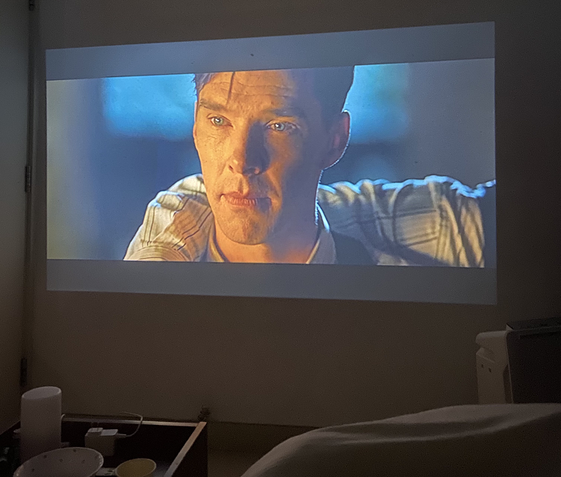

珍贵的朋友们

珍贵的朋友们使我每个平凡的日子都熠熠生辉
新生训练营
中国学生开学前有军训，留学生则有新生训练营！很幸运我没有被滞留在国外，参与了新生训练营。多亏了它，我才有机会认识现在的朋友们，也是因为当时辅导员组织我们一起吃饭、狼人杀等等，我们才一步步熟了起来～
团体活动
如果在群里搜索“吃饭吗”，我想数据会是惊人的hhhhh 虽然平时也会一起在吃食堂，闲暇的日子里，我们也喜欢约着聚餐，无论是在宿舍还是在外。周三的晚饭时间几乎成了固定的宿舍饭局，亲手做炸酱面、泡菜五花肉、烤肉、意面之类(可惜因为上课时间限制我经常错过TT）
当然，大家的活动也不止局限于吃，平日晚课结束，我们会一起夜跑或打羽毛球，周末则拓宽到游泳之类；时间再充裕些的时候，我和朋友也去过故宫拍游客照、玉渊潭公园看人头、香山峰顶吃便当......
当然，大家的活动也不止局限于吃，平日晚课结束，我们会一起夜跑或打羽毛球，周末则拓宽到游泳之类；时间再充裕些的时候，我和朋友也去过故宫拍游客照、玉渊潭公园看人头、香山峰顶吃便当......

熄灯后的邱德拔
宿舍夜聊
刚开学那一阵子，大家都比较有闲。周末的夜晚，朋友们时常待在我的宿舍，偶尔用投影仪播放一部电影，偶尔会玩玩游戏，偶尔只是聊聊天，其实就只是待在一起我就觉得很惬意很舒服了，窝在一起似乎已经变成了日常一样自然的事！
